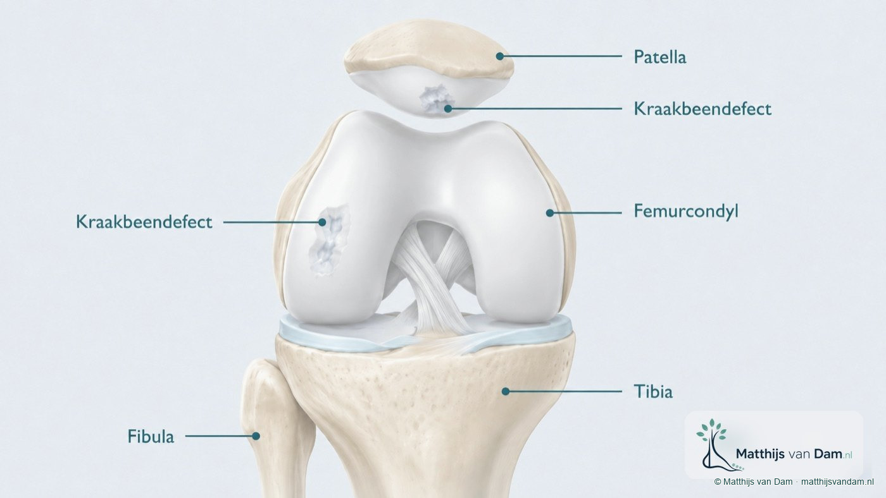
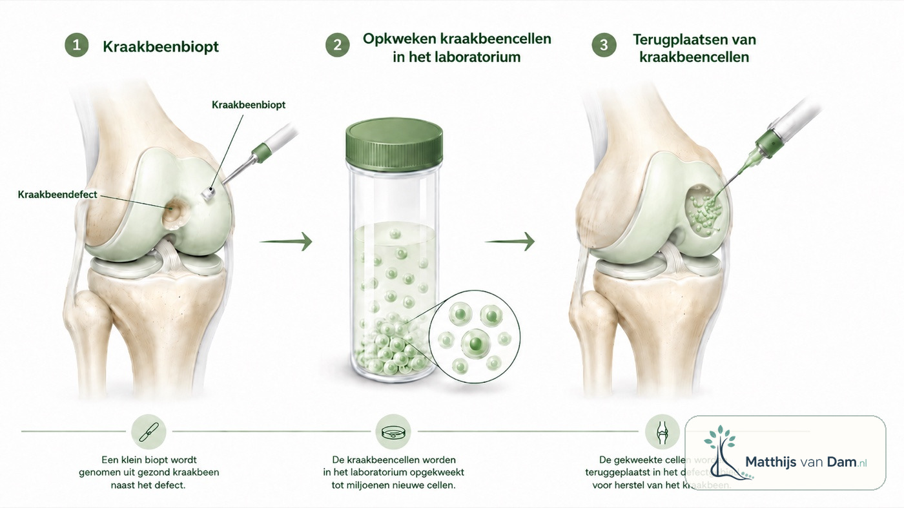

Voorjaar 2025
Mobility Clinic Tilburg: knie-kraakbeenletsel en transplantatie
Sinds begin 2025 ben ik aangesloten bij Mobility Clinic Tilburg. Samen met Chris van den Broek en Lennard van den Boom richten we ons daar op geselecteerde knievragen rond kraakbeenletsel: van diagnostiek en indicatiestelling tot moderne behandelopties zoals kraakbeenceltransplantatie.
Wat we doen binnen Mobility Clinic Tilburg
Mobility Clinic Tilburg is een gespecialiseerd spreekuur voor knieklachten waarbij kraakbeenletsel een belangrijke rol kan spelen. Het gaat vaak om patiënten bij wie gewone uitleg, oefentherapie of eerdere diagnostiek niet genoeg duidelijkheid geeft, of bij wie de vraag is of een kraakbeenherstellende behandeling zinvol kan zijn.[1]
De beoordeling gebeurt in context. Een kraakbeendefect staat zelden op zichzelf: leeftijd, activiteit, klachtenpatroon, locatie en grootte van het defect, beenas, stabiliteit, meniscus, eerdere ingrepen en verwachtingen bepalen samen welke route logisch is.
Wat zijn kraakbeenafwijkingen?
Kraakbeen bekleedt het gewrichtsoppervlak en helpt de knie soepel te bewegen en belasting te verdelen. Een lokale kraakbeenafwijking kan ontstaan na letsel, door een onderliggende aanleg of in samenhang met andere knieproblemen. Dat is iets anders dan gegeneraliseerde artrose van de knie, waarbij het gewricht als geheel verandert.
Bij een kraakbeendefect kunnen pijn, zwelling, slotklachten of belastingsproblemen ontstaan, maar het beeld is niet altijd eenduidig. Daarom zijn lichamelijk onderzoek, goede beeldvorming en het verhaal van de patiënt alle drie belangrijk.
Kraakbeenceltransplantatie
Voor geselecteerde patiënten bestaat tegenwoordig de mogelijkheid van kraakbeenceltransplantatie. Daarbij worden eigen kraakbeencellen afgenomen, buiten het lichaam opgekweekt en later teruggeplaatst in het kraakbeendefect. Deze behandeling is niet voor ieder kraakbeenprobleem geschikt, maar kan bij zorgvuldig gekozen indicaties onderdeel zijn van de behandelopties.
Dit is gespecialiseerde zorg. In Nederland wordt dit gedaan binnen een beperkt aantal centra, waaronder Mobility Clinic Tilburg en universitaire centra zoals UMC Utrecht, UMC Groningen en Maastricht UMC+. Bij een passende indicatie kan dit onder voorwaarden onderdeel zijn van verzekerde ziekenhuiszorg. De actuele beoordeling loopt via het ETZ en de eigen verzekeringsvoorwaarden.

Hoe verloopt zo'n traject?
Een traject begint met een zorgvuldige beoordeling van de verwijzing, voorgeschiedenis, klachten, beeldvorming en eerdere behandelingen. Als kraakbeenceltransplantatie mogelijk een rol speelt, volgt verdere indicatiestelling. Daarbij wordt ook gekeken of bijkomende problemen, zoals standsafwijking of instabiliteit, de uitkomst kunnen beïnvloeden.
De behandeling zelf bestaat meestal uit meerdere stappen. Eerst wordt beoordeeld of het defect geschikt is en kunnen cellen worden afgenomen. Daarna volgt kweek in het laboratorium. In een tweede fase worden de opgekweekte cellen in het defect aangebracht. Revalidatie en belastingopbouw zijn daarna een wezenlijk onderdeel van het behandeltraject.
Verwijzing en afbakening
Niet elke knieklacht of sportblessure past binnen Mobility Clinic Tilburg. Daarom worden verwijzingen vooraf bekeken. Die triage helpt om patiënten op de juiste plek te krijgen: soms binnen dit gespecialiseerde spreekuur, soms via een andere orthopedische route, en soms met aanvullende diagnostiek of behandeling dichter bij huis.
Bronnen
- Meer informatie: Mobility Clinic Tilburg op etz.nl.